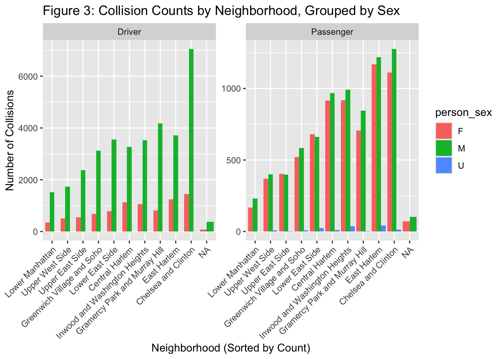
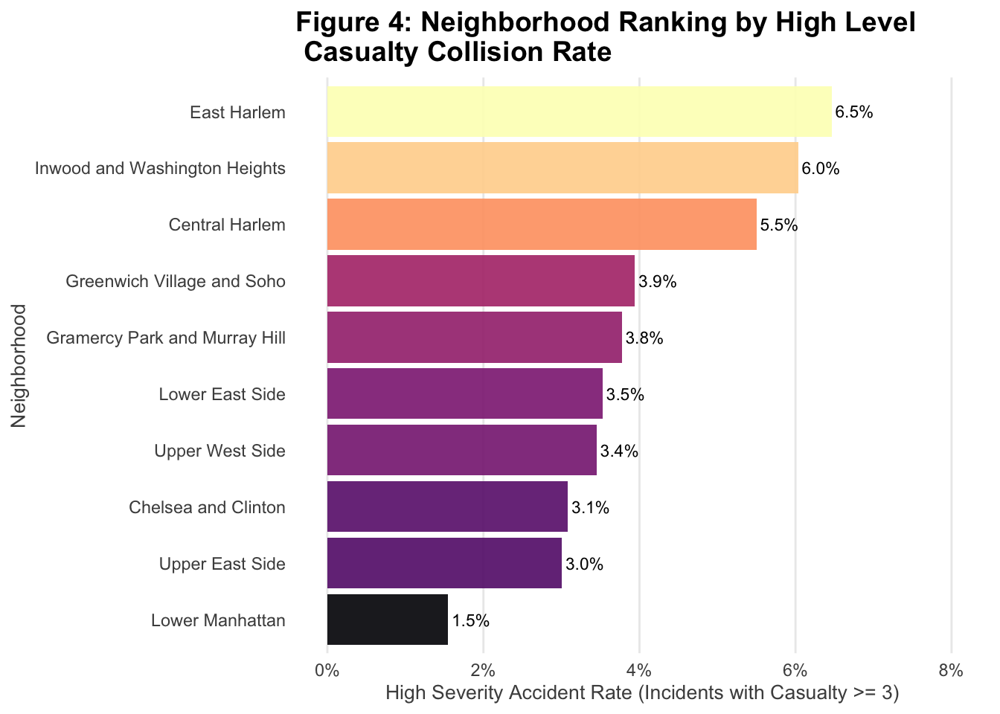
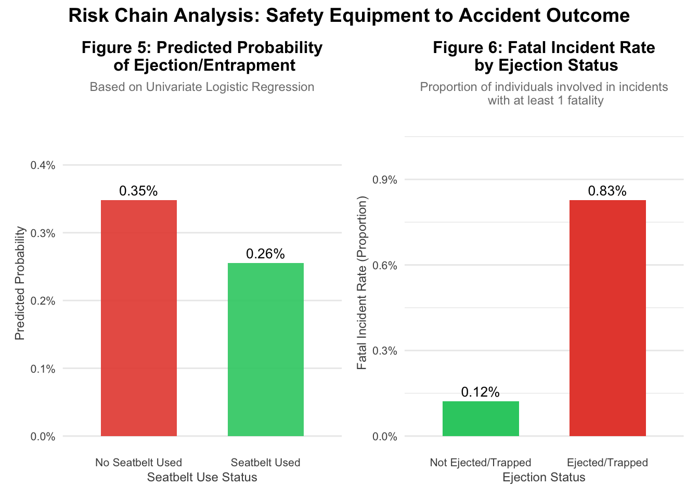

Non Temporal Analysis
Basic statistics:
| Outlier Count |
|---|
| 21 |
| Sex | Count | Proportion |
|---|---|---|
| F | 15692 | 0.271 |
| M | 42076 | 0.726 |
| U | 182 | 0.003 |
| Role | Count | Proportion |
|---|---|---|
| Driver | 43101 | 0.744 |
| Passenger | 14849 | 0.256 |
| Ejection Status | Count | Proportion |
|---|---|---|
| Ejected | 292 | 0.005 |
| Not Ejected | 57416 | 0.991 |
| Partially Ejected | 217 | 0.004 |
| Trapped | 25 | 0.000 |
Table 1,2,3 and 4 Comment: Initial Data Review and Distribution Summary
Initial data cleaning involved removing 21 records with implausible ages (less than 0 or greater than 140) to ensure data validity for subsequent age-based analysis. The fundamental distributions of the filtered dataset reveal clear patterns: Males are significantly overrepresented in collision incidents, constituting 72.6% of individuals compared to 27.1% for females. Furthermore, the majority of involved persons were recorded as Drivers (74.4%), followed by Passengers (25.6%). Analysis of safety outcomes shows that the event of ejection or entrapment is extremely rare, accounting for only about 1% of total records; the overwhelming majority of individuals (99.1%) were recorded as Not Ejected. This rarity confirms that the subsequent logistic regression model addresses a high-risk, low-frequency event.
Age Analysis:

Figure 1 Comment:
During data cleaning, a filter was applied to the person_age variable to retain only plausible ages (0 <= person_age <= 140), removing outliers. The filtered data was then grouped into four categories—Children/Teens (0 - 19), Young Age (20 - 39), Middle Age (40 - 64), and Old Age (65+)—to create the age_group variable. The subsequent analysis showed that the largest proportion of individuals involved in collision incidents fall into the Young Age group, followed by the Middle Age group, highlighting that peak driving and working ages carry the highest risk exposure.

Figure 2 Comment:
The analysis of proportional collision severity across age groups reveals distinct risk profiles. The Children/Teens group faces the highest proportional risk for the most severe outcomes, with 6.0 percent of their recorded incidents resulting in high severity (three or more casualties). Conversely, the Old Age group records the lowest proportion of low severity crashes (zero casualties) at 56.5 percent. This lower rate of minor crashes contributes to Old Age having the highest proportional risk for middle severity incidents (one or two casualties) at 39.6 percent. When combining all injury-resulting crashes (middle and high severity), the Old Age group shows the highest overall casualty risk at 43.4 percent, indicating that while Children/Teens face the greatest proportional risk for the worst-case scenario, Old Age individuals are the most likely to sustain any injury or death when involved in a collision.
Geography Analysis:
| Neighborhood | Count | Proportion |
|---|---|---|
| Chelsea and Clinton | 10908 | 0.19 |
| East Harlem | 7399 | 0.13 |
| Gramercy Park and Murray Hill | 6550 | 0.11 |
| Inwood and Washington Heights | 6534 | 0.11 |
| Central Harlem | 6294 | 0.11 |
| Lower East Side | 5702 | 0.10 |
| Greenwich Village and Soho | 4928 | 0.09 |
| Upper East Side | 3728 | 0.06 |
| Upper West Side | 3016 | 0.05 |
| Lower Manhattan | 2267 | 0.04 |
| NA | 624 | 0.01 |
Table 5 Comment:
The geographic analysis confirms that collision incidents are heavily concentrated in specific areas. Chelsea and Clinton recorded the highest number of collisions at 10,908, representing 0.19 (or 19%) of the listed incidents. East Harlem (7,399 incidents, 0.13 proportion) and Gramercy Park and Murray Hill (6,550 incidents, 0.11 proportion) follow as high-frequency areas. This unequal distribution of incidents highlights areas that require focused resource allocation for traffic safety interventions, particularly in the top five ranked neighborhoods, which each recorded over 6,294 incidents.

Figure 3 Comment:
The data in Figure 3 confirms the sex imbalance observed in the base statistics (72.6% male overall) and reveals how this distribution changes across crash roles and neighborhoods. Across all neighborhoods, male drivers (M) overwhelmingly dominate the collision counts, though the counts for male and female passengers (F) are much closer, indicating the sex disparity is less pronounced in the passenger role. Geographically, the figure reinforces the findings from Table 5: Chelsea and Clinton consistently record the highest number of collisions for both drivers (over 6,000) and passengers (over 1,000), making it the primary collision hotspot. East Harlem is reliably the second-highest neighborhood for both roles, while Lower Manhattan shows the lowest counts. I think reason for the severe concentration in Chelsea and Clinton is attributable to its role as a high-volume transit corridor with dense commercial traffic intersecting with heavy pedestrian activity, creating numerous high-conflict points.

Figure 4 Comment:
While Chelsea and Clinton lead in raw volume, Figure 4 reveals a different picture for proportional risk of severe crashes (High Severity Accident Rate, where Casualty >= 3): East Harlem (6.5%) and Inwood and Washington Heights (6.0%) top the ranking. This indicates that although Chelsea and Clinton have the most total accidents, crashes in East Harlem are proportionally more likely to be fatal or result in mass casualties. Lower Manhattan consistently shows the lowest risk in both raw volume (4% total incidents) and proportional severity (\(1.5\%\) high severity rate).
Casualty Analysis:
| Vehicle Type | Count | Proportion |
|---|---|---|
| Sedan | 24191 | 0.417 |
| Station Wagon/Sport Utility Vehicle | 17504 | 0.302 |
| Taxi | 4771 | 0.082 |
| Bus | 3321 | 0.057 |
| Box Truck | 1859 | 0.032 |
| Seatbelt Status | Count | Proportion |
|---|---|---|
| Not Used | 6039 | 0.133 |
| Used | 39197 | 0.867 |
Table 6 & Table 7 Comment:
The raw collision data contains a large and heterogeneous collection of vehicle types. Since the core of the subsequent safety study involves analyzing the relationship between seatbelt usage, ejection, and casualty outcomes, it is necessary to focus on the dominant passenger vehicle categories. Therefore, to ensure robust analysis and maintain relevance to typical passenger risk, the dataset was filtered to include only the top three most frequent vehicle types by proportion: Sedan (41.7%), Station Wagon/Sport Utility Vehicle (SUV) (30.2%), and Taxi (8.2%). These three categories account for the vast majority of vehicles and form the basis for all models examining the efficacy of safety features.
| term | estimate | std.error | statistic | p.value |
|---|---|---|---|---|
| (Intercept) | 0.0035 | 0.2186 | -25.8834 | 0.0000 |
| seatbelt_used | 0.7330 | 0.2404 | -1.2920 | 0.1963 |

Table 8, Figure 5 & Figure 6 Comment:
The Logistic Regression (Table 8) indicates that using a seatbelt trends toward reducing the odds of ejection/entrapment by 26.7% (OR equals 0.733), though this effect is not statistically significant (p equals 0.1963). This reduction is visualized in Figure 5, which shows the absolute predicted probability of ejection dropping from 0.35% (No Seatbelt) to 0.26% (Seatbelt Used). Crucially, Figure 6 shows the consequence of that intermediate outcome: if an individual is ejected or trapped, the fatal incident rate is drastically higher at 0.83%, compared to only 0.12% for those not ejected/trapped. This signifies that while seatbelt use provides a small reduction in the absolute probability of the event (ejection), successfully avoiding ejection results in a risk of fatality that is almost seven times lower.